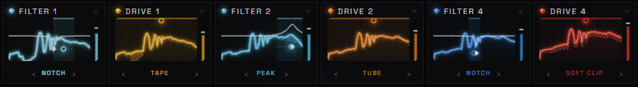
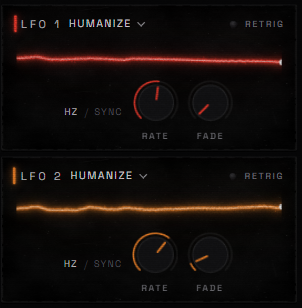
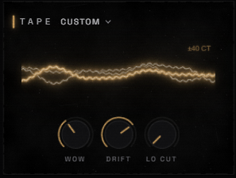

<!doctype html>
<html><head><meta charset="utf-8"><title>RUIN + Alive sections</title>
<link rel="stylesheet" href="../../design/tokens.css">
<link rel="stylesheet" href="../../website/style.css">
<style>
body { background: #0d0b0a; }
.sec { position: relative; border-top: 2px solid rgba(170,160,150,.35); overflow: hidden; }
.in { width: 1264px; margin: 0 auto; padding: 96px 24px; position: relative; z-index: 2; }
.kick { margin-bottom: 14px; color: var(--ember-kick) !important; font-weight: 600; font-size: 15px; letter-spacing: .3em; }
h2 { margin: 0 0 22px; }
.copy p { margin: 0 0 16px; font-weight: 500; font-size: 17.5px; line-height: 1.7; letter-spacing: .03em; color: #c9c2ba; }
.copy ul { list-style: none; margin: 24px 0 0; padding: 0; }
.copy li { display: flex; gap: 16px; margin-bottom: 16px; font-size: 16px; line-height: 1.55; color: #b3ada6; }
.copy li b { flex: 0 0 auto; font-weight: 600; letter-spacing: .2em; font-size: 13px; color: var(--ember-kick); padding-top: 3px; min-width: 26px; }
.copy li strong { color: #ece6df; font-weight: 600; }
.piece { display: block; border-radius: 6px; box-shadow: 0 30px 60px rgba(0,0,0,.75); }
.chain { width: 100%; }
.cap { font-size: 12px; letter-spacing: .26em; text-transform: uppercase; color: #8f8983; margin-top: 14px; }
.cap b { color: #e6e1dc; font-weight: 600; }
.glow-red { position: absolute; inset: 0; background: radial-gradient(ellipse 55% 75% at var(--gx, 70%) 50%, rgba(150,20,10,.45), rgba(70,8,4,.28) 45%, transparent 75%); z-index: 1; }
.glow-ice { position: absolute; inset: 0; background: radial-gradient(ellipse 40% 60% at 30% 50%, rgba(63,184,255,.16), transparent 70%), radial-gradient(ellipse 40% 60% at 75% 55%, rgba(255,90,31,.18), transparent 70%); z-index: 1; }
.housing { position: relative; padding: 18px 34px; border-radius: 8px; background: #0b0a09; box-shadow: 0 30px 70px #000, inset 0 0 0 1px rgba(255,255,255,.05); }
.housing::before, .housing::after { content: ''; position: absolute; top: 0; bottom: 0; width: 22px; background: url('../../src/ui/assets/wood-l.png') center / cover; border-radius: 4px; }
.housing::before { left: 0; } .housing::after { right: 0; background-image: url('../../src/ui/assets/wood-r.png'); }
.tilt { transform: perspective(1600px) rotateY(var(--ry, -12deg)) rotateX(3deg); }
.num { font-weight: 500; font-size: 96px; line-height: 1; color: rgba(240,138,42,.14); letter-spacing: .05em; }
.callout { position: absolute; font-size: 12px; letter-spacing: .18em; text-transform: uppercase; color: #e6e1dc; white-space: nowrap; }
.callout::before { content: ''; position: absolute; width: 1px; background: rgba(240,138,42,.6); left: 50%; }
.callout i { display: block; font-style: normal; letter-spacing: .04em; text-transform: none; font-size: 13.5px; color: #9a948d; margin-top: 4px; white-space: normal; width: 200px; }
</style></head><body>
<div id="root"></div>
<script>
const V = +(new URLSearchParams(location.search).get('v') || 1);
const ruinCopy = (list = true) => `<p class="kick">The RUIN chain</p><h2>Distortion<br>in series</h2>
  <p>Neuro basses aren't one distortion: they are many small ones in a row, each shaping what the next one hears. RUIN gives you eight boxes in any order.</p>
  ${list ? `<ul><li><b>01</b><span><strong>Filters</strong> move on their own: notches, peaks and combs that wander, so the tone never sits still.</span></li>
  <li><b>02</b><span><strong>Drives</strong> in ten flavours, from warm tape to starved tube to digital ruin, each on the band you choose.</span></li>
  <li><b>03</b><span><strong>EQs</strong> between them decide what the next drive bites into. Every box shows exactly what it does.</span></li></ul>` : ''}`;
const aliveCopy = (list = true) => `<p class="kick">Always alive</p><h2>Nothing<br>ever repeats</h2>
  <p>Real instruments never play the same note twice. RUIN-1 moves the way a player does, on many small, independent time scales.</p>
  ${list ? `<ul><li><b>01</b><span><strong>Humanize LFOs</strong> wobble slow and fast at once, never like a pendulum, never like a clock.</span></li>
  <li><b>02</b><span><strong>Tape</strong> adds wow and drift, from a studio reel to a worn-out Walkman, on everything but the sub.</span></li>
  <li><b>03</b><span><strong>Analog drift</strong> gives every voice its own tuning, cutoff and timing, like a real poly synth.</span></li></ul>` : ''}`;
const chain = (w = '100%') => ``;
const lfos = (w = 302) => ``;
const tape = (w = 297) => ``;
const L = {
  // 1 · Split: text beside the pieces, sides swapping
  1: () => `<section class="sec"><div class="glow-red" style="--gx:68%"></div><div class="in" style="display:grid;grid-template-columns:400px 1fr;gap:70px;align-items:center">
      <div class="copy">${ruinCopy()}</div><div>${chain()}<p class="cap"><b>Destroyed Reese</b> · filter → drive, three times over</p></div></div></section>
    <section class="sec"><div class="glow-red" style="--gx:30%"></div><div class="in" style="display:grid;grid-template-columns:1fr 400px;gap:70px;align-items:center">
      <div style="display:flex;gap:28px;justify-content:center;align-items:center">${lfos(340)}${tape(380)}</div><div class="copy">${aliveCopy()}</div></div></section>`,
  // 2 · Band: the chain full width as a strip, the explanation in three columns under it
  2: () => `<section class="sec"><div class="in"><div class="copy" style="max-width:640px">${ruinCopy(false)}</div>
      <div style="margin:44px -60px 0">${chain('calc(100% )')}</div>
      <div class="copy" style="display:grid;grid-template-columns:repeat(3,1fr);gap:40px;margin-top:40px"><ul style="margin:0"><li><b>01</b><span><strong>Filters</strong> that move on their own: notches, peaks and combs that wander.</span></li></ul><ul style="margin:0"><li><b>02</b><span><strong>Drives</strong> in ten flavours, from warm tape to digital ruin, on the band you choose.</span></li></ul><ul style="margin:0"><li><b>03</b><span><strong>EQs</strong> between them decide what the next drive bites into.</span></li></ul></div></div></section>
    <section class="sec"><div class="in"><div class="copy" style="max-width:640px">${aliveCopy(false)}</div>
      <div style="display:flex;gap:30px;margin-top:44px;align-items:flex-end">${lfos(360)}${tape(460)}<div class="copy" style="flex:1"><ul style="margin:0"><li><b>01</b><span><strong>Humanize LFOs</strong>: slow and fast at once, never a pendulum.</span></li><li><b>02</b><span><strong>Tape</strong>: wow and drift on everything but the sub.</span></li><li><b>03</b><span><strong>Analog drift</strong>: every voice its own tuning and timing.</span></li></ul></div></div></div></section>`,
  // 3 · Callouts: the pieces large and centred, short notes pointing into them
  3: () => `<section class="sec"><div class="in" style="text-align:center"><p class="kick">The RUIN chain</p><h2>Distortion in series</h2>
      <p style="max-width:620px;margin:0 auto;font-size:17.5px;line-height:1.7;color:#c9c2ba">Eight boxes in any order. Each one shapes what the next one hears.</p>
      <div style="position:relative;margin:120px 0 130px">${chain()}
        <div class="callout" style="left:6%;top:-92px">Moving filters<i>Notches and peaks that wander on their own.</i></div>
        <div class="callout" style="left:22%;bottom:-112px">Ten drives<i>Warm tape to digital ruin, on the band you choose.</i></div>
        <div class="callout" style="left:56%;top:-92px">What it does<i>Every box shows its sound before and after.</i></div>
        <div class="callout" style="left:72%;bottom:-112px">Any order<i>Eight boxes: filters, drives and EQs.</i></div></div></div></section>
    <section class="sec"><div class="in" style="text-align:center"><p class="kick">Always alive</p><h2>Nothing ever repeats</h2>
      <p style="max-width:620px;margin:0 auto;font-size:17.5px;line-height:1.7;color:#c9c2ba">It moves the way a player does, on many small time scales at once.</p>
      <div style="display:flex;justify-content:center;gap:120px;margin-top:60px;text-align:left">
        <div>${lfos(380)}<p class="cap"><b>Humanize</b> · slow and fast at once, never a pendulum</p></div>
        <div>${tape(470)}<p class="cap"><b>Tape</b> · wow and drift, studio reel to worn Walkman</p></div></div></div></section>`,
  // 4 · Housing: the pieces set into a slice of the synth's own body (wood cheeks), in the red light, tilted like the hero
  4: () => `<section class="sec"><div class="glow-red" style="--gx:68%"></div><div class="in" style="display:grid;grid-template-columns:380px 1fr;gap:70px;align-items:center">
      <div class="copy">${ruinCopy()}</div><div class="housing tilt">${chain()}</div></div></section>
    <section class="sec"><div class="glow-red" style="--gx:32%"></div><div class="in" style="display:grid;grid-template-columns:1fr 380px;gap:70px;align-items:center">
      <div class="housing tilt" style="--ry:12deg;display:flex;gap:18px;justify-content:center;align-items:center">${lfos(330)}${tape(400)}</div><div class="copy">${aliveCopy()}</div></div></section>`,
  // 5 · Fire + ice: the chain in its own colours, the explanation as numbered chapters
  5: () => `<section class="sec"><div class="glow-ice"></div><div class="in"><div style="display:grid;grid-template-columns:120px 1fr;gap:30px"><div class="num">01</div>
      <div><div class="copy" style="max-width:700px">${ruinCopy(false)}</div><div style="margin-top:40px">${chain()}</div>
      <div class="copy" style="display:grid;grid-template-columns:repeat(3,1fr);gap:36px;margin-top:34px"><p style="font-size:15.5px"><strong style="color:#8ae9ff">Ice</strong> — filters that wander on their own.</p><p style="font-size:15.5px"><strong style="color:#ff8a1f">Fire</strong> — ten drives, warm to wrecked.</p><p style="font-size:15.5px"><strong style="color:#e6dcc8">Bone</strong> — EQs that shape what bites.</p></div></div></div></div></section>
    <section class="sec"><div class="glow-red" style="--gx:50%"></div><div class="in"><div style="display:grid;grid-template-columns:120px 1fr;gap:30px"><div class="num">02</div>
      <div><div class="copy" style="max-width:700px">${aliveCopy(false)}</div><div style="display:flex;gap:30px;margin-top:40px">${lfos(340)}${tape(450)}</div>
      <div class="copy" style="display:grid;grid-template-columns:repeat(3,1fr);gap:36px;margin-top:34px"><p style="font-size:15.5px"><strong>Humanize</strong> — slow and fast at once.</p><p style="font-size:15.5px"><strong>Tape</strong> — wow and drift.</p><p style="font-size:15.5px"><strong>Drift</strong> — every voice its own.</p></div></div></div></div></section>`,
  // 6 · Editorial: one huge line, the pieces floating at angles, quiet copy in the corner
  6: () => `<section class="sec"><div class="glow-red" style="--gx:60%"></div><div class="in" style="min-height:640px">
      <p class="kick">The RUIN chain</p><h2 style="font-size:64px;letter-spacing:.2em;line-height:1.1">Distortion<br><span style="color:var(--ember-kick)">in series.</span></h2>
      <div style="position:absolute;right:20px;top:300px;width:840px;transform:rotate(-3deg)">${chain()}</div>
      <div class="copy" style="position:absolute;left:24px;top:300px;width:380px"><p>Eight boxes, any order: moving filters, ten drives and EQs. Each one shapes what the next one hears — the way neuro basses are really made.</p></div>
      </div></section>
    <section class="sec"><div class="glow-red" style="--gx:35%"></div><div class="in" style="min-height:620px">
      <p class="kick" style="text-align:right">Always alive</p><h2 style="font-size:64px;letter-spacing:.2em;line-height:1.1;text-align:right">Nothing<br><span style="color:var(--ember-kick)">repeats.</span></h2>
      <div style="position:absolute;left:30px;top:90px;transform:rotate(-4deg)">${lfos(360)}</div>
      <div style="position:absolute;left:400px;top:220px;transform:rotate(3deg)">${tape(440)}</div>
      <div class="copy" style="position:absolute;right:24px;bottom:96px;width:380px;text-align:right"><p>Humanize LFOs that wobble slow and fast at once, tape wow and drift, and analog drift on every voice. It moves the way a player does.</p></div></div></section>`,
};
document.getElementById('root').innerHTML = L[V]();
</script></body></html>
